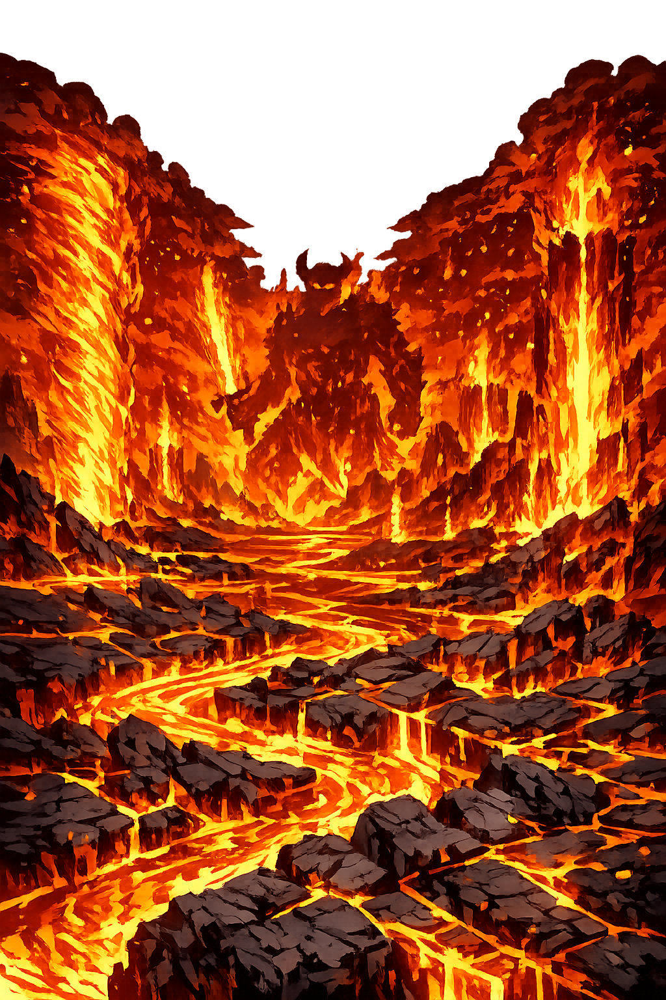

The Authentic Orthography
Fire · Destruction · The Primordial · Surtr's Domain

Why Muspellheimr.com is the correct form
Muspellheimr
The name in its original Old Norse form — a compound of Muspell (the primordial fire, the destructive force that existed before the world) and heimr (home, world, realm). In the Norse cosmos, Muspellheimr is one of the two primordial realms that existed before creation itself — the other being Niflheimr, the realm of ice and mist. Where Niflheimr was frozen and still, Muspellheimr burned with eternal fire. The heat from this realm and the cold from Niflheimr met in the void of Ginnungagap, and from their collision, the world was born. Muspell is not just fire — it is the first fire, the fire that will end everything.
MUSPELHEIM
Reduced to ten letters. A video game biome. A Marvel location. The name of a thousand products that use the Norse aesthetic without understanding the Norse meaning. The compound is flattened. The final r — the Old Norse nominative ending — is dropped. What remains is a brand, a cliché, a void where a primordial realm once burned. In Old Norse, heimr is a complete word with grammatical force. Reducing it to HEIM strips the name of its linguistic integrity, like reducing England to GLAND.
Muspellheimr
The full Old Norse form, with the -r ending preserved — the nominative singular masculine marker that English silently drops. This is the form found in the Poetic Edda, the Prose Edda, and every academic text on Norse mythology. The domain is pure ASCII, but the word is complete. No Punycode is needed because no transformation is required. The Latin alphabet already contains every letter necessary to write this name correctly. This is not a compromise — it is the authentic orthography.
Muspellheimr.com → Muspellheimr.com
Certain Old Norse names — particularly realm names like Muspellheimr — are written entirely in standard Latin letters and require no Unicode transformation. The ASCII form is already the scholarly standard for these words. However, this is not true of all Norse names. Óðinn (with the eth, ð) and Þórr (with the thorn, þ) carry characters that plain ASCII cannot represent. Those names benefit from full Unicode restoration. Realm names like Helheimr and Muspellheimr simply happen to use only the basic Latin alphabet — so the domain is the word, exactly as written.
How the realm of fire was truly spoken
What burns at the beginning and end of all things
Muspellheimr is not Hell. It is not a place of punishment for the wicked. It is the primordial fire — the first thing that existed, and the thing that will end everything. In the beginning, there was only Ginnungagap, the great void. To the north lay Niflheimr, realm of ice and mist. To the south lay Muspellheimr, realm of fire and heat. The fire from the south met the ice from the north, and from their melting, the giant Ymir was born, and the cow Auðumla, and from them came the gods and the world. But Muspellheimr did not disappear after creation. It still burns at the southern edge of the cosmos, guarded by Surtr, waiting for the end of days.
Muspell is not ordinary fire. It is the first fire, the fire that existed before the world, before the gods, before time. In Völuspá, the seeress describes it as a place of brightness and burning, so hot that nothing from the other worlds can enter it. The flames send sparks and embers into the void, and these sparks will one day become the stars. Muspellheimr is creation and destruction in one realm.
Surtr — "the Black One" — guards the frontier of Muspellheimr with a flaming sword that shines brighter than the sun. In Völuspá, it is prophesied that at Ragnarǫk, Surtr will lead the sons of Muspell from the south, and his sword will burn the world. Surtr is not evil. He is necessary. He is the guardian of the fire that made the world and the fire that will unmake it. At Ragnarǫk, he will fight Freyr and kill him — and then he will fling fire over the earth and burn all nine worlds.
The fire giants who dwell in Muspellheimr are called the sons of Muspell — not because they are his literal children, but because they are born of the fire itself. They ride across the bridge Bifröst at Ragnarǫk, and the bridge breaks beneath them. They are described as innumerable, a host of burning warriors who have waited since the beginning of time for the moment when they will be unleashed. When they ride, the sky itself catches fire.
In Gylfaginning, Snorri Sturluson describes how the heat of Muspellheimr melted the ice of Niflheimr in Ginnungagap, and from the dripping water, the giant Ymir was formed. The cow Auðumla licked the salt from the ice and revealed Búri, the first of the gods. Creation itself came from the meeting of fire and ice. Without Muspellheimr, there would be no world — and without it, there will be no end.
Stories of creation, Surtr, and the fire that ends the world
Before the world, there was only Ginnungagap — the great void, the yawning chasm. To the north of it lay Niflheimr, where ice and poison and mist had accumulated for uncounted ages. To the south lay Muspellheimr, burning with flames so hot that nothing from the other worlds could endure them. The heat from the south met the ice from the north, and the ice began to melt. From the melting drops, the first being was formed — Ymir, the primordial giant, who was neither male nor female but contained within himself the potential for all giants. As the ice continued to melt, it formed the cow Auðumla, who fed Ymir with her milk. Auðumla licked the salty ice, and on the first day, a man's hair appeared. On the second day, his head. On the third day, the whole man emerged — Búri, the first of the gods. From Búri came Borr, and from Borr came Óðinn, Vili, and Vé — the gods who would kill Ymir and build the world from his body. All of it began with Muspellheimr. The fire did not create directly — it created by meeting its opposite. That is the Norse understanding of existence: nothing comes from singularity. Everything comes from collision.
Surtr sits at the frontier of Muspellheimr, guarding the border with a sword that shines brighter than the sun. He has been there since before the gods made the world. In Völuspá, the seeress describes him as coming from the south with fire, and in Gylfaginning, Snorri says that at Ragnarǫk, Surtr will ride first, and both before and behind him will be fire. Surtr's sword is one of the most powerful weapons in Norse mythology — it is not named, but it does not need a name. It is the fire itself, given shape. At Ragnarǫk, Surtr will fight Freyr, the god of harvest and peace. Freyr will fall, not because he is weak, but because he gave his own sword to his servant SkÃrnir in exchange for the giantess Gerðr. Surtr kills the god who gave away his weapon. That is the lesson: in a world that ends in fire, you do not disarm yourself for love.
When Ragnarǫk begins, the sons of Muspell will ride from the south. Their leader is Surtr, and their number is beyond counting. They will cross the bridge Bifröst — the rainbow bridge that connects the worlds — and the bridge will break beneath them. They will meet the gods at VÃgrÃðr, the great plain where the final battle takes place. Surtr will fight Freyr and kill him. The fire giants will fight the gods of Ãsgarðr. And when the battle is done, when the gods are dead and the world is broken, Surtr will fling fire over the earth and burn all nine worlds. The sun will turn black. The earth will sink into the sea. The stars will fall from the sky. And from the ashes, a new world will rise — a world without Surtr, without the fire giants, without the old gods. That is the Norse vision of apocalypse: not punishment, but renewal. The fire does not hate the world. The fire simply is — and what it burns, it makes ready for what comes next.
The Norse cosmos is not a pantheon of gods alone — it is a map of worlds. Ãsgarðr has the gods. Miðgarðr has the humans. Jǫtunheimr has the giants. Ãlfheimr has the elves. Helheimr has the dead. And Muspellheimr has the fire — the primordial force that made everything and will unmake it. To understand the Norse universe, you must understand all nine realms — not just the ones that make good movies.
This is not a directory. This is a resurrection.
Enter the Lexicon